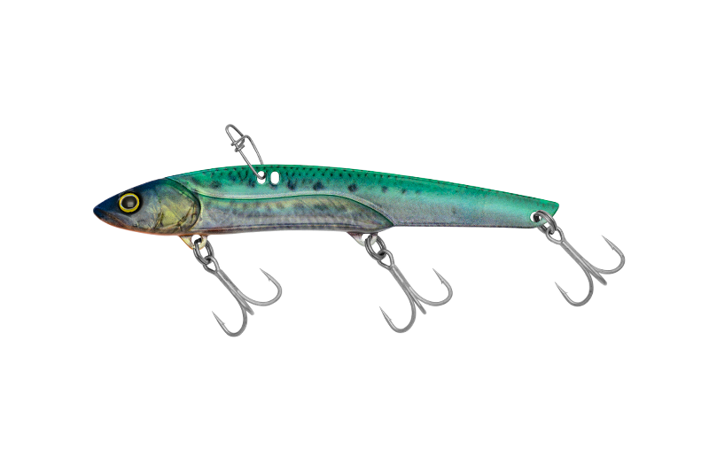
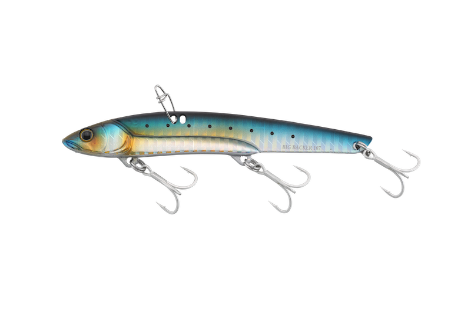
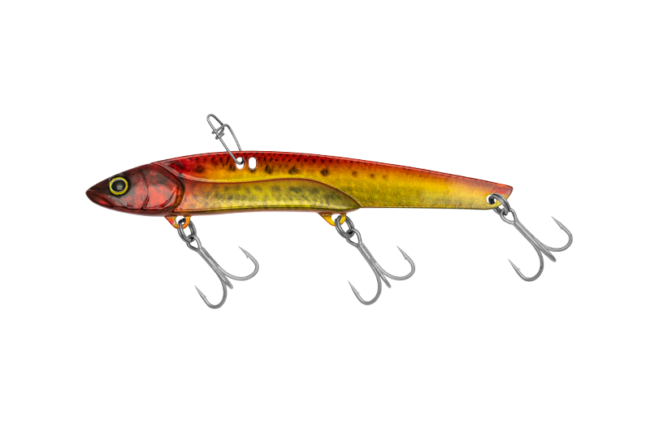
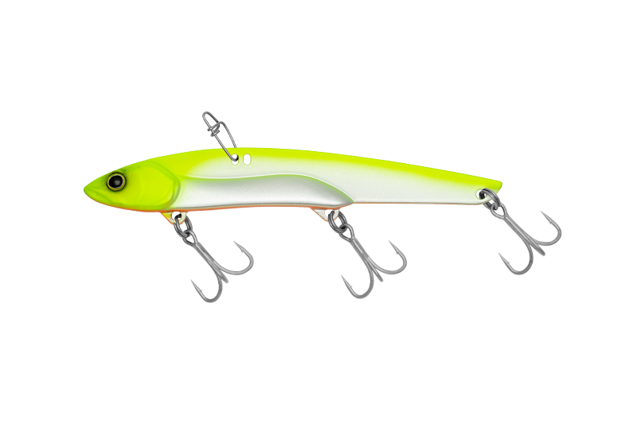

ビッグバッカー107
（BIGBACKER 107）
ビッグバッカー107（BIGBACKER 107）はJACKALL（ジャッカル）のメタルバイブレーションです。
2012年の発売以降、シーバス・ブリ・サワラ・ヒラメなどに高い実績を誇る「THE スタンダードバイブレーション」。スリム＆ロングボディで高いアピール力とベイトに近いシルエットを兼ね備えているのが最大の魅力です。

画像出典:ジャッカル公式HP
スペック
- メーカー
- JACKALL（ジャッカル）
- タイプ
- メタルバイブレーション（シンキング）
- 全長
- 107mm
- 自重
- 27g
- フック
- #8（3フック）
- ターゲット
- シーバス・ブリ・サワラ・ヒラメ
- 価格
- 1,331円（税込）
▼今すぐチェック

ビッグバッカー107の特徴
スリムロングボディ×3フックで、ベイトライクなシルエットとフッキング率を両立した定番メタルバイブ
-
スリム＆ロングボディでアピールとナチュラルさを両立
特徴的なスリムロングボディは、高いアピール力とベイトフィッシュに近いシルエットを兼ね備える。カタクチイワシなどにマッチする107が、シリーズの基準サイズだ。
-
アクション可変アイでレンジと動きを調整
前方のアイはタイトなアクション設定で浮き上がりを抑え、ファストリトリーブにも対応。後方のアイはワイドなアクション設定で浮き上がりが良く、浅いレンジやスローリトリーブで誘いたい時に向く。
-
ロングバイブの元祖「3フックシステム」
3フックメタルのロングバイブレーションの元祖。ショートバイトにもしっかりフッキングし、掛けた後も3本のフックが荷重を分散してバラシを防ぐ。
ビッグバッカー107の使い方
基本はただ巻き。着水後にカウントダウンでレンジを決め、ブルブルと振動が伝わる速度で巻いてくる。表層〜中層を速く引きたい時は前方のアイ、浅いレンジをゆっくり引きたい時は後方のアイと、アイを付け替えて使い分ける。
ボトムを取ってからのリフト＆フォールも有効。フォール中のバイトに備えてラインテンションを保ち、ヒラメやシーバスが付きやすいボトム付近を丁寧に探っていきます。
ビッグバッカー107の得意な状況
イワシなどの小〜中型ベイトが入っている港湾部や堤防、サーフで、広範囲を手早く探りたい状況が最大の出番。
ボートシーバスやサワラ・ブリの回遊狙いにも強く、季節や場所を問わずタックルボックスに入れておきたい1本です。
ワンポイント
3フック仕様なので、根の荒い場所ではボトムを擦りすぎないようにリトリーブを早めに開始すると根掛かりを減らせます。
深場狙いや遠投が必要な場合は、同じ107mmで35gの107H.Wに持ち替えると使い分けがしやすくなります。
ビッグバッカーシリーズの使い分け
| モデル | 全長／自重 | 得意な場面 |
|---|---|---|
| 80 | 82mm／25.5g | 浅場・キビナゴなど小型ベイトパターン |
| 107 | 107mm／27g | カタクチイワシ等にマッチするシリーズの基準サイズ（本記事のモデル） |
| 107H.W | 107mm／35g | 深場狙い・遠投が必要な場面 |
| 128 | 128mm／44g | コノシロやマイワシなど大型ベイトパターン |
ビッグバッカーは80・107・107H.W・128の4サイズ展開。107を基準に、浅場や小型ベイトには80、深場や遠投には107H.W、大型ベイトには128と使い分けるのがメーカー推奨の組み立てだ。
オススメカラー
ビッグバッカー107は全24色展開。シーバス・青物狙いでオススメのカラーを厳選して紹介します。

超リアルノマセイワシイワシを再現したリアル系。澄み潮やスレた状況でナチュラルに見せたい時に。

イワシ／ボーダーホロイワシカラーにボーダーホロのフラッシングをプラス。デイゲームの基準カラーに。

超リアルアカキン濁りやローライトに強いアカキン。マズメ時や濁った港湾部で存在感を出したい時に。

チャートバックパールIIシーバスの超王道カラー。濁りや夜でもシルエットがはっきり出る。
画像出典:ジャッカル公式HP
ビッグバッカー107に似ているルアー
-
 アイアンマービー109
エバーグリーン
詳細はこちら＞
アイアンマービー109
エバーグリーン
詳細はこちら＞
全長109mm・自重37gのロングボディ鉄板バイブ。前後2つのラインアイと3フックシステムを持ち、大きめのベイトパターンで回遊魚を狙う考え方がビッグバッカー107と共通する。
-
 ラナケラ57
アイマ
詳細はこちら＞
ラナケラ57
アイマ
詳細はこちら＞
人気の鉄板バイブレーション。コンパクトなシルエットで、ベイトが小さい時や食い渋る時にビッグバッカー107と使い分けたい1本。
-
 フリッパーiTMB33
DUO
詳細はこちら＞
フリッパーiTMB33
DUO
詳細はこちら＞
ブレード付きのメタルバイブ。巻くだけで振動とフラッシングでアピールし、サーフや堤防で広範囲を探るという狙いどころが重なる。